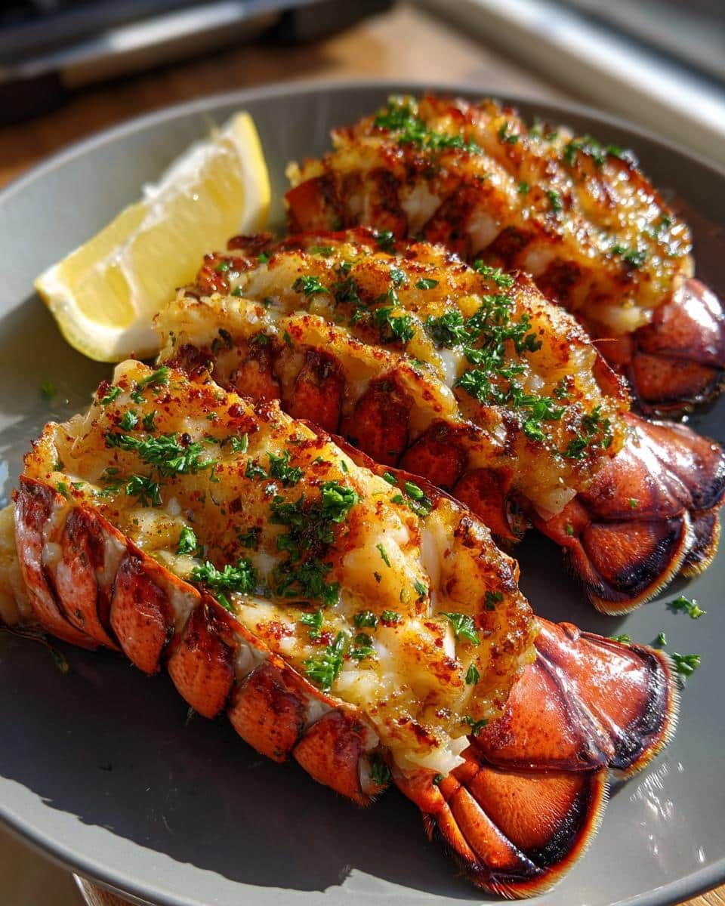

In a large skillet that has an accompanying lid, heat the olive oil over medium heat.
When hot, add the onion, garlic, and red pepper flakes.
Cook for 3-4 minutes, stir frequently until the onions are tender,
and the garlic is fragrant.
Crumble the ground beef and Italian sausage into the skillet,
sprinkle with 1/2 teaspoon of kosher salt,
stir frequently until the meat is completely cooked.
Break the lasagna noodles into 1-2 pieces and spread over the meat layer.
Add the water, crushed tomatoes, and tomato sauce.
Bring to a boil, then cover with the lid. Reduce heat to a simmer,
stir occasionally until the noodles are cooked.
While the noodles are cooking, combine the ricotta, 1/2 cup of parmesan,
and 1/2 cup of mozzarella cheeses with 1/2 teaspoon kosher salt,
and 1/4 teaspoon freshly ground black pepper.
When the pasta is completely cooked, dollop the ricotta cheese mixture over the meat,
and noodle mixture and sprinkle with the reserved parmesan and mozzarella.
Remove from heat and cover the pan for 4-5 minutes,
or until the ricotta mixture softens and the other cheeses melt.
Top with chopped fresh basil and serve.
Baked Lobster Tails

Ingredients
5 pieces lobster tails
95g butter melted
13.33g parsley minced
36.67 ml lemon juice
36.67 ml lemon juice
5g salt
Instructions
Preheat the oven to 400°F. Wash the lobster tails under cold running water.
Use kitchen shears to cut through the top of each lobster tail lengthwise until you reach the tail tip.
For large lobster tails, make an additional perpendicular cut from the center toward both ends to help the shell open more easily.
Hold the lobster tail with both hands. Press your thumb against the middle of the abdomen,
while your other hand grips the opening you just cut. Pull it outward until the meat is visible.
Slide your finger between the shell and the meat to loosen it, but keep the base attached.
Carefully lift the meat out and rest it on top of the shell.
Combine the melted butter, minced parsley, lemon juice, Dijon mustard, and salt in a small bowl.
Mix well until everything is incorporated.
Arrange the lobster tails on a baking tray. Spoon a generous amount of marinade over each one and spread it evenly using a pastry brush.
Reserve some marinade for later. Let the tails marinate for at least 30 minutes.
Bake for 10 to 12 minutes or until the meat turns opaque and reaches an internal temperature of 140°F.
Remove from the oven and brush with the remaining marinade. Arrange on a plate and serve.